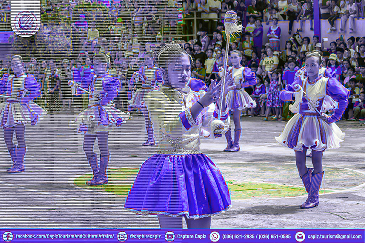

About The Festival
Every year from January 12 to 20, Jamindan, Capiz transforms for the vibrant Binuligay Festival, celebrating Sr. San Sebastian with lively street dancing, a fun run, and a food festival. The term “Binuligay” embodies the spirit of “Bayanihan,” or communal cooperation. The highlight of the festival is the Pangahaw Presentation on January 19. The festivities culminate with the “Pasundayag Jamindanganon,” an evening of local talent presentation, celebrity appearances, and grand fireworks display.
Festival Highlights

Watch The Celebration
Photo Gallery
